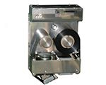
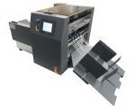
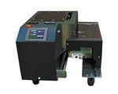
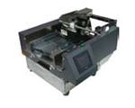
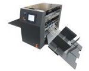
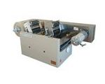

包装機用サーマルプリンター
包装機用サーマルプリンターは発売以来、産業用のプリンターとしてコンパクトなサイズとメンテナンスの手軽さから食品をはじめ医薬、化学、工業などの業界での多くの工場等でご愛用頂いております。
導入実績
| 【食品業界】 | パン、煮物、業務用食材、食品添加物、製茶、もやし、たけのこ、中華菓子、和菓子、冷凍食品、水産、燻製、レトルト、玄米、調理加工、米加工、コーヒー、ゼリー、養鶏、鶏卵、もずく、コロッケ、青果、洋生菓子、カステラ、食材、佃煮、フードチェーン、さつま揚げ、たれ、調味料、粉末食品、加工食品等 |
|---|---|
| 【流通加工業界】 | パッケージング等 |
| 【飲食店業界】 | 調味料、食材等 |
| 【医薬業界】 | 歯科材料等 |
| 【化学業界】 | 化粧品等 |
| 【工業業界】 | エレクトロニクス、プラスティック等 |
卓上型サーマルプリンター
卓上型サーマルプリンターは発売以来、空袋に直接印字する産業用ダイレクトサーマルプリンターとして設置とメンテナンスの手軽さから食品をはじめ医薬、化学、工業などの業界での多くの工場等でご愛用頂いております。
導入実績
| 【食品業界】 | 米菓、海苔加工、調味料、食品添加物、レトルト食品、漬物、海産物、農産物、明太子、蒟蒻、しらたき、贈答品、惣菜、タレ、ミルクパウダー、鶏肉、豚肉、牛肉、冷凍食品、清涼飲料水、うどん、カット野菜、弁当、おにぎり、鰹節、豆腐、油揚げ、だし、サラダ、水産加工、鶏卵、米、給食、味噌、しょうゆ、飴、乳製品等 |
|---|---|
| 【流通加工業界】 | パッケージング等 |
| 【医薬業界】 | 医薬品、医療機器、医療品等 |
| 【化学業界】 | 接着剤、化粧品、肥料、化学品等 |
| 【工業業界】 | 雑貨、特殊釘、日用品、セラミック等 |
| 【園芸業界】 | 種苗、堆肥、飼料等 |
包装機用 サーマルプリンター SCS
ラジアル制御機能付、連続、間欠式超小型プリンター。印字エリアにより1～3インチプリンターを選択。縦ピロー、横ピローなどに設置可能。コンパクトサイズで設置が容易、ランニングコストも低減。

卓上型 片面サーマルプリンター SMP-350P
日付印字から最大106W～200Lmmの印字が可能。各種フィルムを自動供給し連続印字が可能な少量多品種向け。

卓上型 両面同時サーマルプリンター CPS-UB
両面同時印字が可能。カラー印字で商品ラベル貼付が不要。

卓上型 一体同時サーマルプリンター CPS-UB
自動供給装置に超小型プリンターが掲載されたコンパクト設計されたタイプ。日付専用印字から最大53W×200Lmmまでフィルムに直接印字が可能。

卓上型 手差サーマルプリンター SMP-HP
日付印字から最大106W～200Lｍｍの印字可能。小ロットの生産多品種の商品向け。

卓上型 ロールフィルムサーマルプリンター RPS
グラビア印刷では不可能な小ロット、多品種の商品向け。コーヒー、紅茶などの粉体ものに最適。
